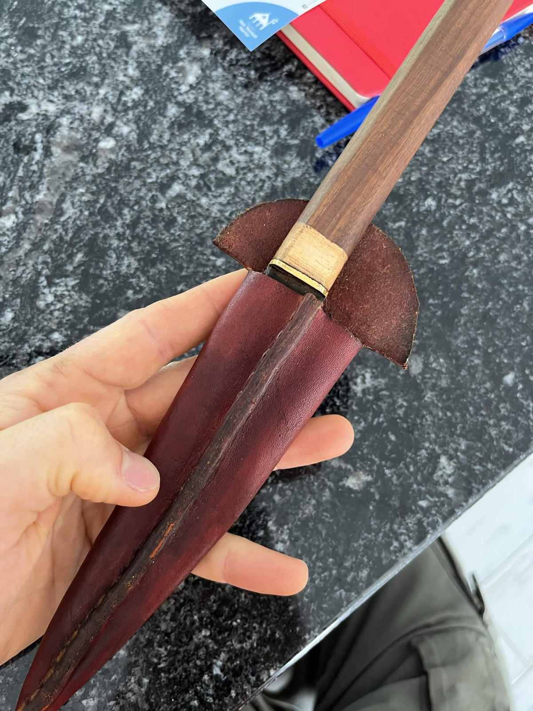
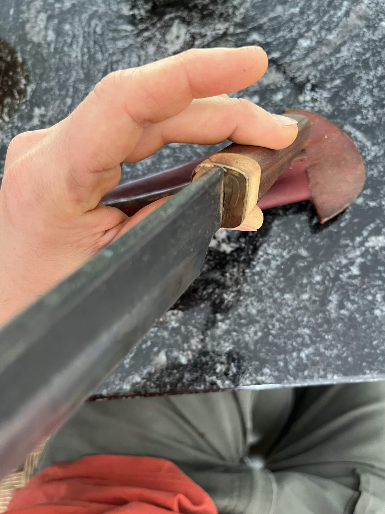

Forja
El acero se calienta en la fragua y se martilla hasta darle la forma de la hoja. Cada golpe define la pieza.
Forjado a mano · Argentina
Cuchillos forjados uno por uno. Hoja templada en el taller, mango de madera y vaina de cuero cosida a mano.




Cada cuchillo sale distinto de la fragua: el acero, la madera del mango y el cuero de la vaina lo hacen único.
Pronto, las primeras piezas.
Cinco pasos, todos en el taller.
El acero se calienta en la fragua y se martilla hasta darle la forma de la hoja. Cada golpe define la pieza.
Un tratamiento térmico que endurece la hoja para que corte bien y aguante el uso de todos los días.
Madera trabajada en el taller, ajustada a mano a la espiga y rematada con un bolster de bronce.
Cuero cortado y cosido a mano, a la medida exacta de cada hoja.
Se afila, se pule y se revisa cada detalle antes de que la pieza salga del taller.
Contacto
Piezas únicas y a pedido. El canal de contacto se abre pronto.
Próximamente